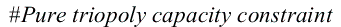
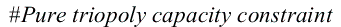
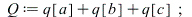
| 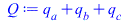 | (1) |

| (2) |

| 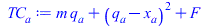 | (3) |

| (4) |

| 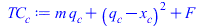 | (5) |

| (6) |

| 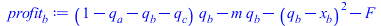 | (7) |

| 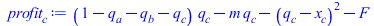 | (8) |
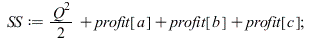
| 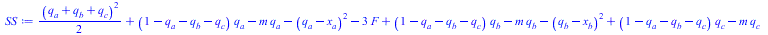 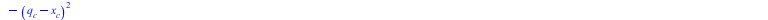 |
(9) |
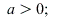`(a, 0); 1" align="center" border="0">
| 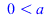 | (10) |

| (11) |
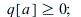=`(q[a], 0); 1" align="center" border="0">
| 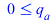 | (12) |
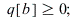=`(q[b], 0); 1" align="center" border="0">
| 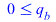 | (13) |
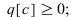=`(q[c], 0); 1" align="center" border="0">
| 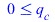 | (14) |
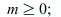=`(m, 0); 1" align="center" border="0">
| 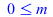 | (15) |
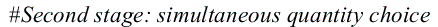

| 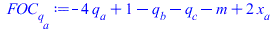 | (16) |
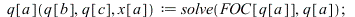
| 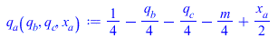 | (17) |

| (18) |
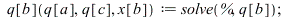
| 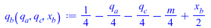 | (19) |
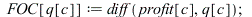
| 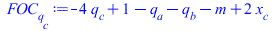 | (20) |
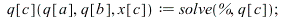
| 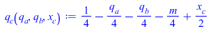 | (21) |

| 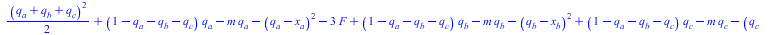 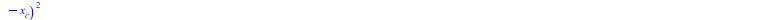 |
(22) |
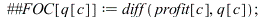
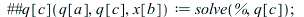
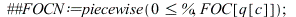
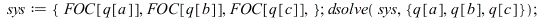
| 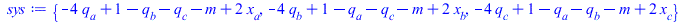 | |
| 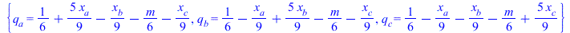 | (23) |
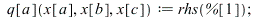
| 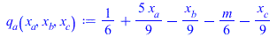 | (24) |
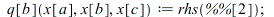
| 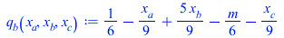 | (25) |
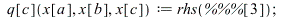
| 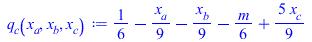 | (26) |
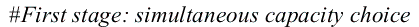
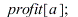
| (27) |
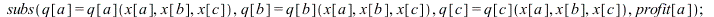
| 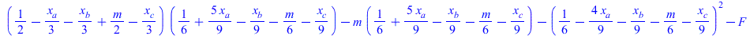 | (28) |
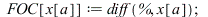
| (29) |
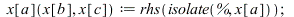
| (30) |
| (31) |
| (32) |

| (33) |

| (34) |
| (35) |
| (36) |
| (37) |
| (38) |
| (39) |
| (40) |
| (41) |
| (42) |
| (43) |
| (44) |
| (45) |

| (46) |

| (47) |
| (48) |
| (49) |
| (50) |
| (51) |

| (52) |
| (53) |

| (54) |

| (55) |
| (56) |

| (57) |
| (58) |
| (59) |
| (60) |
| (61) |

| (62) |

| (63) |
| (64) |
| > |